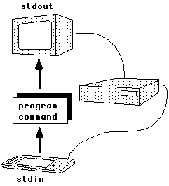

class: center, middle # CSCI 395.86 Open Source Software Development <br> ## Working in the Linux Command-Line .author[ Stewart Weiss <br> ] .license[ Unless noted otherwise all content is released under [CC BY 4.0](https://creativecommons.org/licenses/by/4.0/). ] --- # Overview - There are many different Unix operating systems. __Linux__ is one of them. Other popular forms of Unix include BSD variants such as FreeBSD, proprietary versions such as IBM's AIX and Oracle's Solaris, and Android. - Most of what is in these slides is true of all "flavors" of UNIX, but some of it is only true of Linux. - There is too much to cover about working in the Unix command-line in a short slide presentation. - These slides cover many topics, none in great depth. But they are designed to cover the most important aspects of working in the _UNIX programming environment_. - Working in the command-line really means two things: - using Unix __commands__ and - using the __shell__. - These slides start with commands and then cover the most common Linux shell, __bash__. - You are encouraged to read the many resources on the topics presented here. The last slide has links to the ones I think are good and concise. --- # A Bit about Shells - You need to know a bit about shells before you can type any commands in Unix, so we begin with the very basics. - A __shell__ is an interactive command-line interpreter for the operating system, but it is also a programming language. - A __command-line interpreter__ is a program that displays a prompt (such as '$') and waits for you to type a command. When you type the command followed by a _newline_ character, it "executes" that command and then redisplays the prompt and starts this cycle all over again. - Example: ```bash $ whoami stewart ``` - `whoami` is an unusual command - it displays your username just in case you forgot. - The prompt can be customized in many ways*. On the system in which I have prepared these slides, whose name is `harpo`, my prompt is ```bash [stewart@harpo slides]$ ``` .footnote[ The PS1 shell variable in `bash` controls the first level prompt string. ] --- # Command Introduction - Unix commands are the tools that you use to get things done in Unix. You type their names at the shell prompt, and they do their magic. - Examples ```bash $ date Thu Mar 28 11:22:45 EDT 2019 $ echo "Hello world. Code responsibly!" Hello world. Code responsibly! $ wc css/slides.css 167 332 2661 css/slides.css ``` - The `date` command displays the current time and date; - `echo` displays the strings that follow it on the command-line; - `wc` is short for __w__ord __c__ount; it displays the number of lines, words, and characters in the file(s) whose names follow it on the command-line. --- # Files and Directories - Files reside in a large tree called the __directory hierarchy__. Each has a __pathname__ describing the path from the root of the tree (which is called /) to the file. - A directory is just a special type of file that contains a table with file names and a way to find the actual files on the system's storage devices. - There are two special directories: the __home directory__, and the __current working directory__. The home directory is the one you see when you login to the Unix system. The current working directory is the one you are "currently in". - The home directory has the abbreviation `~` and the current directory has the abbreviation `.` ( a period). - The `ls` command displays the contents of a directory: ```bash $ls . bash_tutorial.html css img js ``` - As a convenience, files in the current directory can be named by their last component. That is why a file like `/home/stewart/notes` can be abbreviated to `notes` when my current directory is `/home/stewart`. --- # Types of Commands - Every Unix __command__ is either an executable file, or a command that is built into a shell (or sometimes both!) - Commands like `ls` and `date` are executable binaries. - Commands like `cd` and `bg` are usually __shell built-ins__; they are implemented within the shell program itself. - Commands like `pwd` and `echo` are both shell built-ins and executable files. - If a command is an executable, the `which` command will display the (absolute) pathname of that executable: ```bash $which ls /bin/ls ``` - The `type` command (which is built-in) displays the type(s) of its arguments: ```bash $type pwd cal pwd is a shell builtin cal is /usr/bin/cal ``` --- # Getting Help - Of course you can do browser searches for help; on commands, but it is easier to use the resources found right on your machine. - The `man` command is the first thing to try. `man` is short for __man__ual. - To access the __manual page__ for a command, type `man` followed by the command name. E.g., ```bash $man ls ``` brings up the man page (short for manual page) for `ls`. - There is also the `info` command, which works for those commands that have `info` pages. Not all pages do. Type ```bash $info ``` to see the starting page for the `info` system, which lists its table of contents. --- # Categories of Commands - There are thousands of commands. Following are categories with the most useful commands in each, in no particular order. - File and Directory Processing - `ls, more, less, cat, file, view, od, strings, pwd, basename, dirname,` `find, diff, cmp,touch, mv, cp, rm, rename, ln, cd , chmod, rmdir, mkdir` - Filters - `awk, cut, grep, head, paste, perl, sed, shuf, sort, split, tail, tr, uniq, wc` - System and User Information - `date, domainname, du, groups, hostname, id, last, printenv, users, times, who` - Process and Job Control - `bg, fg, jobs, pgrep, ps, kill, pkill, timeout, uptime, ^C, ^D, ^S, ^Q` - Miscellaneous - `seq, echo, yes, man, bc` --- # General Command Syntax - In general, commands may have options and arguments. The general form is ```bash commandname [options] arguments ``` where square brackets [] mean that the thing enclosed in them is optional. - Options begin with a hyphen `-`. Multiple options are usually allowed. For most commands, if the option does not require an argument of its own, it may be combined with other options using a single hyphen. E.g.: ```bash $ls -a -l ~ ``` can be written ```bash $ls -al ~ ``` but ```bash $cut -d, -f2 names.csv ``` cannot be written ```bash $cut -df,2 names.csv ``` --- # Viewing Files - Many of the commands to view the contents of files are simple to use. Some are intended for text files only, others any type of file. Because they are easy, no examples are given. Look up the syntax and options in the man pages. - All are used by following the command name with a list of files. They include: - `more` and `less` - display a screenful at a time of the given text files - `view` - brings up the `vi` editor in read-only mode. Use it only if you know `vi`. It can be given multiple text file names. - `cat` - "__c__oncatenates __a__nd __p__rints" its list of text file arguments. It whizzes by on the screen, so use it only to see small files. - `od` - displays an "octal dump" of any file, including binaries. It has lots of options to make it very useful. - `strings` - print the strings of printable characters in files. It is very useful for finding the strings in compiled code. --- # `ls` - This lists information about files and directories - Syntax: ```bash ls [option]... [file]... ``` If no files are given it lists information about the current directory. - Some very useful options: ```bash -l - produce a "long" listing -a - show all files, including hidden ones -F - append trailing character to classify type -t - sort by time of last modification, most recent first -R - recursively list subdirectories ``` - Examples - list all files in current directory with most recent first, classifying ```bash $ls -atlF ``` - list all files sorted by access time ```bash $ls -atulF ``` --- # `basename` - `basename` strips leading directory path and suffix from filenames - Syntax: ```bash basename pathname [suffix] ``` outputs `pathname` with the leading path removed and, if it has a suffix matching `suffix` with that removed also. - Examples: ```bash basename /usr/bin/sort -> sort basename include/stdio.h .h -> stdio basename include/stdio.h .foo -> stdio.h # i.e., suffix does not match basename ~/hunter/cs395.86_s19/blogs/stewart-weekly -weekly -> stewart ``` --- # `dirname` - `dirname` strips the filename from a pathname, leaving the directory path. - Syntax: ```bash dirname pathname [pathname] ... ``` outputs each pathname with its last non-slash component and trailing slashes removed. - Examples: ```bash dirname /usr/bin/sort -> /usr/bin dirname /usr/bin/gcc /usr/lib/gcc /usr/share/man/man1/gcc.1.gz -> /usr/bin /usr/lib /usr/share/man/man1 dirname ~/hunter/cs395.86_s19/blogs/stewart-weekly -> /home/stewart/hunter/cs395.86_s19/blogs ``` --- # `find` - Its man page states, "search for files in a directory hierarchy", but this is an understatement. It is one of the most powerful commands available in Unix. - The `find` command allows you to apply commands and actions to all files matching a set of search criteria in one or more subtrees of the Unix file system. - Simplified syntax (some options suppressed): ```bash find [starting-point...] [expression] ``` - `starting-points` are the directories to act as the roots of the hierarchies to search. - `expression` describes what is to be searched for; it includes search criteria as well as actions to perform. - With no expression, `find` displays every file in the trees rooted at the `starting-points`. The default action is `-print` ```bash find . -print ``` is equivalent to ```bash find . ``` --- # `find` ### finding by file name - Finding (printing paths to) all files in the directory `dir` whose name ends in `.cpp`: ```bash find dir -name "*.cpp" ``` __Lesson__: The `*` is a shell wildcard that matches 0 or more characters, including the period if it is the first character in the name. - Finding all files in `dir` whose name is exactly `main.cpp` ```bash find dir -name "main.cpp" ``` -- - Finding all files in `dir` whose name ends in any of `.jpg`, `.JPG`, `.JPg`, etc: ```bash find dir -iname "*.jpg" ``` __Lesson__: `-iname` is a case-insensitive version of `-name`. -- - Finding all files in `dir` whose name ends in any of `.jpg`, `.JPG`, `.jpeg`, `.JPEG`, etc: ```bash find dir -iname "*.jpg" -o -iname "*.jpeg" ``` __Lesson__: Expressions return `true` or `false`. `-iname` is a __test__ applied to each file as it is found. If the filename matches, it returns `true` otherwise `false`. The `-o` is a logical OR-operator; its operands above are `-iname "*.jpg"` and `-iname "*.jpeg"`. If either is true then the filename passes the test. --- # `find` ### finding by time stamp - Unix timestamps files with three stamps: time of last access, time of last modification, and time of last change of status (file properties). - Finding files in `dir` that have been __modified__ within the past 3 hours: ```bash find dir -mmin -180 ``` __Lesson__: -mmin expects an argument in minutes. The `-` in front of 180 means "less than". -- - Finding files in `dir` that have been modified more than 3 hours ago: ```bash find dir -mmin +180 ``` -- - Finding files in `dir` that have been __accessed__ (use `-amin`) exactly 3 hours ago: ```bash find dir -amin 180 ``` -- - Finding files in `dir` whose __status changed__ (use `-cmin`) within the past 8 hours: ```bash find dir -cmin -480 ``` --- # `find` ### finding by other properties - In Unix, properties such as size, type, permissions, user ownership, group ownership, and more, are stored in a special structure called an __inode__. `find` can test any of these properties. - Finding files in `dir` larger than 500 Kilobytes (1024 bytes): ```bash find dir -size +500k ``` -- The letter after the number can be `c`, `w`, `k`, `M`, or `G`. Guess what they stand for. - Finding files in `dir` that are executable: ```bash find dir -executable ``` -- - Finding files in `dir` that are owned by user stewart and group cs_ossd ```bash find dir -user stewart -a -group cs_ossd ``` __Lesson__: `-a` is the logical AND-operator --- # `find` ### finding by other properties - Finding files in `dir` for which people other than the owner and the group have write access, whether or not the owner or group does. ```bash find dir -perm -002 ``` It is dangerous to let anyone be able to write to a file. This looks for all such files. - Finding files in `dir` for which the owner has read, write, execute permission and no one else has access of any kind: ```bash find dir -perm 700 ``` - Finding files in `dir` that are __regular__ files: ```bash find dir -type f ``` To find directories, replace `f` with `d`. --- # `find` ### taking actions when files are found - You can use add __actions__ to expressions. These actions can be applied to the files for which the test returns true, or to a set of arguments that follow the action. - Useful actions include `-print`, `-prune`, and `-exec`. There are many others. - `-prune` is used to prune the search, i.e., prevent it from descending the tree. - `-exec <command>` executes the <command> that follows it. - Run the `file` command on every regular file below the current directory : ```bash find . -type f -exec file '{}' \; ``` __Lesson__: `exec` is followed by a command. `{}` after the command is replaced by the file that matched the test. It must be written in quotes, and the semicolon must be escaped with backslash as shown. - Remove every file whose names ends in `~` below the current directory (dangerous if you make a mistake): ```bash find . -name "*~" -execdir /bin/rm '{}' \; ``` --- # Streams, Files, and Redirection - Unix provides every running process with three __streams__: - __standard input__, __standard output__, and __standard error__ - A __stream__ is a flow of bytes into or out of a running process. In Unix, a stream is implemented with a data structure that includes buffers to store the bytes and various data members to control its flow and keep track of the status of the stream.  - Streams can be connected to devices or files or other processes, as youi will see shortly. - When a process is created, by default its input comes from the keyboard (terminal device), and the standard output and error go to the terminal device. --- # Redirection - All shells allow for any of its streams to be connected to or from files the streams of other processes, or other devices. This is called __I/O redirection__. - Attaching a file to the standard input is called __input redirection__. - Syntax: ```bash command < file ``` -- - Attaching a file to the standard output is called __output redirection__. - Syntax: ```bash command > file ``` -- - Attaching the standard output of one command to the standard input of another is done by creating a __pipe. - Syntax: ```bash command1 | command2 ``` --- --- # Filters - to be filled in... --- # A Bit About bash - bash was written by Brian Fox in 1989 at the request of Richard Stallman, of the Free Software Foundation. It was added to by Chet Ramey in the early 1990's. - At the time, there were several other shells, such as the __C-shell__ (`csh`) written by Bill Joy, and the __Bourne shell__ (`sh`), written by Stephen Bourne). - bash was a replacement for the [Bourne shell](https://en.wikipedia.org/wiki/Bourne_shell) Its name is a pun: - bash = __b__ourne __a__gain __sh__ell - It is distributed with most Linux distributions ans is the default shell in many systems, including most Linux distributions, Apple's macOS, and Solaris. - It has become very popular. --- # Shell Scripts - All common Unix shells are Turing-complete* __scripting__ languages. Programs written in a shell's language are called __shell scripts__. .footnote[ * A language is Turing complete if it can be used to simulate any Turing machine. ] - A _shell script_ is basically a program written in the shell programming language. - A bash script is written in bash; a C shell script is written using the syntax of the C shell. - This is a simple bash script: ```bash #!/bin/bash # This script does nothing except print "Hello world; code responsibly!" # Its purpose is to show what the first line looks like and # to introduce comments. # # Written by Stewart Weiss, Sept. 16, 2014 echo "Hello world; code responsibly!" ``` - The first line is required - it tells the shell to run the interpreter `/bin/bash` using the rest of the file as its input. In effect it says, "I am a bash script". You must put it at the top of every bash script. - The comment delimiter is the `#` - anything after it is ignored by bash. - The only command in this file is the `echo` command. --- # Running a Shell Script - Suppose the preceding script is in a file named `helloworld` in the current working directory. We need to make it an executable file by typing at the prompt (here assumed to be `$`): ```bash $ chmod +x helloworld ``` - The `chmod` command changes the permissions on its file arguments. The `+x` means "add execute permission for all users". The file also needs to be readable, so it is better to write, instead, ```bash $ chmod +rx helloworld ``` - We can run the script by typing its name, and the output appears below. ```bash $ ./helloworld Hello world; code responsibly! ``` ---